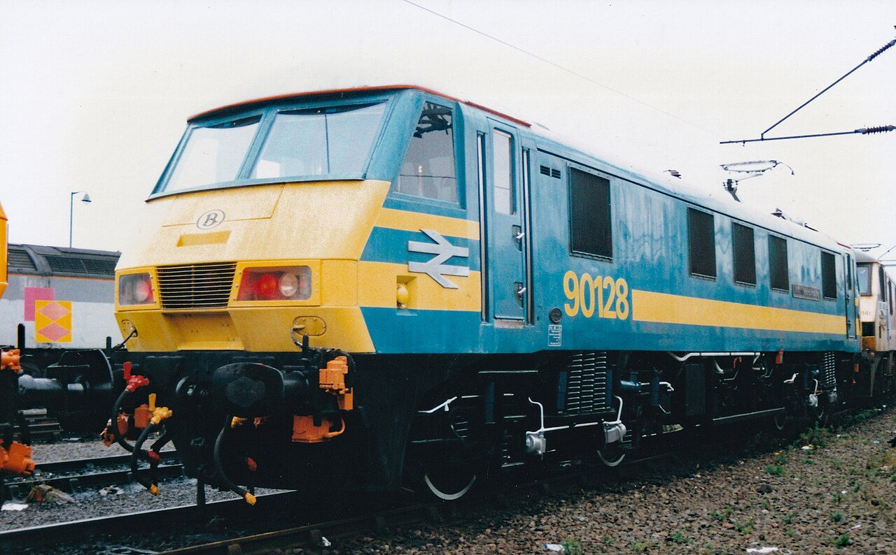
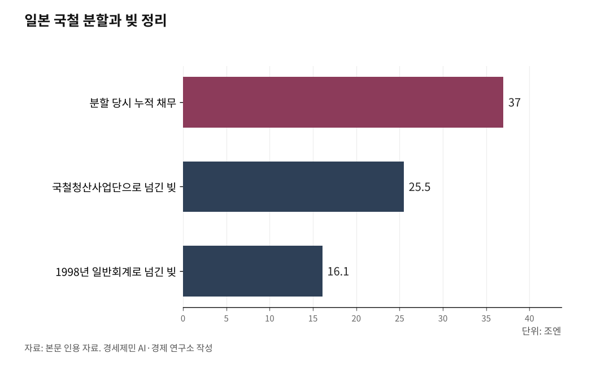

[127년 한국철도⑦] 영국은 쪼개 실패했고 일본은 합쳐 살았다… 한국의 길은 독일에 있다
철도 구조개혁, 나라마다 배경도 원인도 방식도 달랐다
밀도 높은 철도망은 쪼갤수록 비싸진다… OECD 실증연구의 결론
독일은 통일 부채 떠안고 한 지붕 아래 회계만 나눴다… 광역철도 민간 점유 39%
일본은 부동산을 쥐어줘 스스로 벌게 했다… JR큐슈는 매출 60%를 비철도에서 번다
AI경제저널=김갑봉 기자 | 인하대 해양AI융합센터 김갑봉 연구교수(물류학)│6편은 22조원 부채의 뿌리에 자연독점이 있다고 했다. 선로는 한 벌만 깔린다. 그 위를 누가 어떻게 굴릴지가 재정을 가른다. 세계는 저마다 다른 사정에서 다른 길을 골랐다. 영국은 재정난에 쪼갰고, 일본은 국철 부채에 지역별로 나눴고, 독일은 통일 때문에 묶었다. 그 명암을 견줘 한국의 자리를 찾는다.

밀도가 답을 가른다
상하분리는 선로를 까는 자와 열차를 굴리는 자를 나눈다. 선로만 따로 떼면 여러 운영사가 들어와 경쟁한다는 논리다. 유럽연합이 1991년 지침(91/440)으로 이 길을 열었다. 수직통합은 반대다. 선로와 운영을 한 회사가 함께 쥔다. 책임이 한곳에 모이고 조율이 쉽지만, 경쟁은 들어오기 어렵다.
어느 쪽이 싼지는 실증연구가 답했다. 미즈타니와 우라니시(2013)는 OECD 국가 철도 조직을 분석해, 열차가 뜸한 저밀도망에서는 분리가 비용을 줄이지만 열차가 촘촘한 고밀도망에서는 오히려 비용을 늘린다는 사실을 밝혔다. 갈라진 두 조직 사이 조율 비용이 경쟁의 이득을 삼키기 때문이다. 애벗과 코언(2017)의 메타분석 결론도 같다. 분리의 성패는 노선 밀도, 여객·화물 구성, 규제 수준에 달렸다. 정답은 하나가 아니다. 제 나라 철도망에 맞는 옷이 답이다.

영국, 재정난에 쪼개 실패했다
영국 개혁의 배경은 재정 부담과 민영화 기조였다. 1993년 철도법으로 선로 관리를 레일트랙(Railtrack)으로 떼어내 1996년 증시에 상장했고, 운영은 스무 곳 넘게 쪼개 민간에 맡겼다. 시장이 알아서 효율을 낼 것이라 믿었다.
결과는 참담했다. 레일트랙은 유지보수를 외주로 돌렸고 책임은 흩어졌다. 1997년 사우스올에서 7명, 1999년 래드브로크그로브에서 31명, 2000년 해트필드에서 4명, 2002년 포터스바에서 7명이 잇단 사고로 숨졌다. 레일트랙은 2001년 파산관재에 들어갔고, 선로는 공공기관 네트워크레일(Network Rail)로 넘어갔다. 2024년에는 여객 운영을 국유로 되돌리는 법이 통과됐고, 2025년 11월에는 선로와 운영을 단일 공공기관(GBR)으로 다시 묶는 법안이 하원에 제출됐다. 쪼갠 지 30년 만의 회귀다. 고밀도망을 잘게 나누면 비용과 위험이 커진다는 실증연구의 경고가 현실이 된 사례다.
일본, 합치고 부동산을 쥐어줬다
일본의 문제는 국철(JNR) 자체였다. 정치가 요금과 노선을 좌우하며 빚이 불었고, 분할 당시 누적 채무가 37조엔에 이르렀다. 1987년 일본은 유럽과 반대로 갔다. 국철을 일곱 회사로 나누되, 각 회사가 제 구역 선로와 운영을 함께 쥐는 지역별 수직통합을 지켰다.
여기에 세 번째 기둥이 있었다. 부동산이다. JR 각사는 역과 역세권 땅을 함께 물려받아 역빌딩·상업시설·부동산 개발로 철도 수지를 보완했다. 아시아개발은행연구소(ADBI) 보고서를 보면 비철도 매출 비중이 JR동일본은 3분의 1, JR큐슈는 60%에 가깝다. 인구 적은 세 섬 회사 가운데 규슈가 유일하게 증시 상장까지 간 힘도 이 다각화에서 나왔다.
성과는 또렷했다. 1985년 나라가 6000억엔을 보조하고도 1조엔 넘게 적자를 내던 철도가, 2005년도에는 JR 7사 기준 약 5000억엔 경상흑자로 돌아섰다. 그늘도 있다. 홋카이도·시코쿠의 구조적 적자는 여전하다. 옛 국철 빚 처리도 무거웠다. 분할 때 25조5000억엔이 국철청산사업단으로 넘어갔고, 1998년 사업단을 해산하며 나라가 이자 딸린 빚 16조1000억엔을 일반회계로 떠안았다.
프랑스와 이탈리아, 문을 여는 법
프랑스 개혁의 배경은 EU 지침 이행이었다. 1997년 인프라를 RFF로 떼었지만 두 조직의 조율 실패로 효율이 되레 떨어졌다. 결국 2018년 개혁법을 거쳐 2020년 SNCF 지주 아래 다시 묶었다. 대신 시장 개방을 의무화했다. 프랑스 교통규제청 집계로 2024년 여객 수요는 2019년 대비 14% 늘었고, 지역 노선(TER·앵테르시테)은 35% 늘었다.
이탈리아는 상하분리 위에 오픈액세스 경쟁을 얹었다. 2012년 민간 고속철 이탈로(Italo)가 진입한 뒤 고속철 수요는 2011년 대비 2017년 90% 늘었고, EU 집행위원회는 경쟁 개방으로 이탈리아 운임이 31% 내린 것을 확인했다. 두 나라의 교훈은 하나다. 조직을 합치더라도 독립 규제기관이 제대로 서면 경쟁의 문은 열 수 있다.
독일, 한국이 볼 길
독일의 배경은 통일이었다. 동서독 두 국철을 합치며 눈덩이 빚을 정리해야 했다. 1993년 두 국철의 차입금은 662억 마르크(약 340억 유로)에 이르렀다. 1994년 철도개혁의 첫 단추는 이 옛 부채를 나라가 연방철도자산기구(BEV)로 떠안는 것이었다. 그 위에 도이체반(DB) 지주를 세워 인프라와 운영 자회사를 한 지붕에 두되 회계를 나눴고, 광역·지역 여객은 주정부에 넘겨 입찰 경쟁을 붙였다.
30년 성과는 뚜렷하다. 열차 운행 거리(열차경로km)는 1994년 8억7500만에서 2022년 11억3300만으로 29% 늘었고, 광역철도의 민간 점유율은 39%(2022년)에 이른다. 2024년에는 인프라 자회사를 공익 중심 법인 DB인프라고(InfraGO)로 재편해 선로 투자를 공공 책임으로 되돌렸다. 명암도 있다. 2025년 상반기 장거리 정시율은 63.4%에 그쳤고, 독일 독점위원회는 지주 안 교차보조 위험을 비판한다. 그래도 고밀도망의 조율과 경쟁을 함께 잡은 모델이라는 점에서, 촘촘한 간선망을 가진 한국과 조건이 가장 닮았다.
한국, 통합의 세 가지 조건
한국은 2004년 상하분리를 택했다. 공단이 선로를 짓고, 코레일이 그 위를 달리며 시설사용료를 낸다. 그 사용료가 KTX 매출의 약 34%, SRT는 50%에 이른다. 공단은 걷은 돈으로 유지보수를 다시 코레일에 위탁한다. 돈이 돌고 도는데 책임은 흩어졌다. 6편이 짚은 22조원 부채는 이 구조에서 자랐다.
운영은 다시 합쳐진다. 국토교통부는 2025년 12월 통합 로드맵을 내놨다. 2026년 3월 KTX와 SRT 운영을 먼저 합치고, 연말까지 코레일과 SR을 한 기관으로 묶는다. 통합이 성공하려면 독일과 일본이 가르쳐준 세 가지가 따라야 한다. 첫째, 부채의 공적 처리다. 독일은 340억 유로를 나라가 떠안고서야 새로 출발했다. 둘째, 회계 투명성과 독립 규제다. 한 지붕 아래서도 회계를 나누고 규제기관이 서야 경쟁의 문이 닫히지 않는다. 셋째, 자산 활용이다. 일본처럼 역세권 개발과 비철도 사업의 길을 넓혀 철도가 스스로 벌게 해야 한다.
길을 정해도 비어 있는 칸이 있다. 화물이다. 다음 편에서 사라진 철도화물을 짚는다.
※ 이 기사는 AI 프로그램 클로드를 활용해 작성했습니다.
참고문헌
· Mizutani, F. & Uranishi, S., "Does Vertical Separation Reduce Cost? An Empirical Analysis of the Rail Industry in European and East Asian OECD Countries", Journal of Regulatory Economics 43(1), 2013.
· Abbott, M. & Cohen, B., "Vertical Integration, Separation in the Rail Industry: A Survey of Empirical Studies on Efficiency", European Journal of Transport and Infrastructure Research 17(2), 2017. https://doi.org/10.18757/ejtir.2017.17.2.3191
· House of Commons Library(영국 의회 도서관), "Railways: Railtrack, 1994-2002". https://researchbriefings.files.parliament.uk/documents/SN01224/SN01224.pdf
· legislation.gov.uk(영국 정부 법령), "Passenger Railway Services (Public Ownership) Act 2024", 2024.11.28. https://www.legislation.gov.uk/ukpga/2024/25
· House of Commons Library(영국 의회 도서관), "Railways Bill: Research Briefing CBP-10386", 2025. https://commonslibrary.parliament.uk/research-briefings/cbp-10386/
· EUR-Lex(유럽연합), "Development of the Community's Railways(지침 91/440)". https://eur-lex.europa.eu/legal-content/EN/TXT/?uri=LEGISSUM:l24057
· 프레시안, "일본 철도는 어떻게 민영화됐고, 지금은 어떤 모습인가?", 2024.09.15. https://www.pressian.com/pages/articles/2024091517025948425
· 国土交通省(일본 국토교통성), "運輸白書 平成10年版(운수백서 1998년판, 국철청산사업단 채무 처리)", 1998.
· International Railway Journal, "High-Speed Competition Delivers Passenger Benefits and Market Growth". https://www.railjournal.com/in_depth/high-speed-competition-delivers-passenger-benefits-and-market-growth/
· Asian Development Bank Institute, "The Privatization of Japan Railways and Japan Post: Why, How, and Now(ADBI Working Paper 1039)", 2019. https://www.adb.org/sites/default/files/publication/539746/adbi-wp1039.pdf
· Autorité de Régulation des Transports(프랑스 교통규제청), "The Strong Growth in Rail Demand Continued in 2024", 2025.06. https://www.autorite-transports.fr/wp-content/uploads/2025/06/pr-first-figures-of-rail-results-2024.pdf
· European Commission(EU 집행위원회), "Rail Market Opening: Competition Leads to Lower Ticket Prices", 2024.09.23. https://transport.ec.europa.eu/news-events/news/rail-market-opening-competition-leads-lower-ticket-prices-eu-study-finds-2024-09-23_en
· Deutsche Bahn AG, "30 Years of Rail Reform in Germany", 2024. https://wettbewerbssymposium.deutschebahn.com/resource/blob/12654720/84fa396e57166d3ea7ebdf0d3fa22df9/30-years-of-the-Rail-Reform-data.pdf
· Deutsche Bahn AG, "Integrierter Zwischenbericht 2025: Pünktlichkeit(2025년 상반기 장거리 정시율)", 2025. https://zbir.deutschebahn.com/2025/en/interim-group-management-report-unaudited/quality-and-security/punctuality/
· Monopolkommission(독일 독점위원회), "10. Sektorgutachten Bahn", 2025.06.12. https://monopolkommission.de/de/gutachten/sektorgutachten/sektorgutachten-bahn/468-10-sektorgutachten-bahn-2025
· 철도경제신문, "KTX가 무궁화·새마을보다 비싼 이유… '선로사용료'의 비밀". https://www.redaily.co.kr/news/articleView.html?idxno=16094
· 대한민국 정책브리핑, "철도공사와 철도공단, 차이점 아세요?". https://www.korea.kr/news/reporterView.do?newsId=148622304
· 국제신문, "2026년 말까지 고속철도 운영사인 코레일·SR 통합된다", 2025.12.08. https://www.kookje.co.kr/news2011/asp/newsbody.asp?code=0200&key=20251208.99099002544
사진 출처
· [대표사진] SIMON A W BEESTON, "British Rail Class No. 90128 of British Rail at Basford Hall - October 1993.jpg", 위키미디어 공용, 퍼블릭 도메인, https://commons.wikimedia.org/wiki/File:British_Rail_Class_No._90128_of_British_Rail_at_Basford_Hall_-_October_1993.jpg
※ 이 기사는 인공지능을 활용해 작성했습니다.
관련기사
- [127년 한국철도⑧] 철도화물 1%, OECD 꼴찌… 항만·산단에 선로를 대라
- [127년 한국철도⑥] KTX는 벌고, 회사는 빚진다… 22조 부채의 진짜 뿌리
- [127년 한국철도⑨] 북녘 철길 끊겼다… 화물열차 통째로 배에 실어 대륙으로
- [127년 한국철도⑩] 꽉 찬 경부고속선, 하루 190회가 한계… 증설과 재설계, 둘 다 급하다
저작권자 © AI경제저널 무단전재 및 재배포, AI학습 및 활용 금지